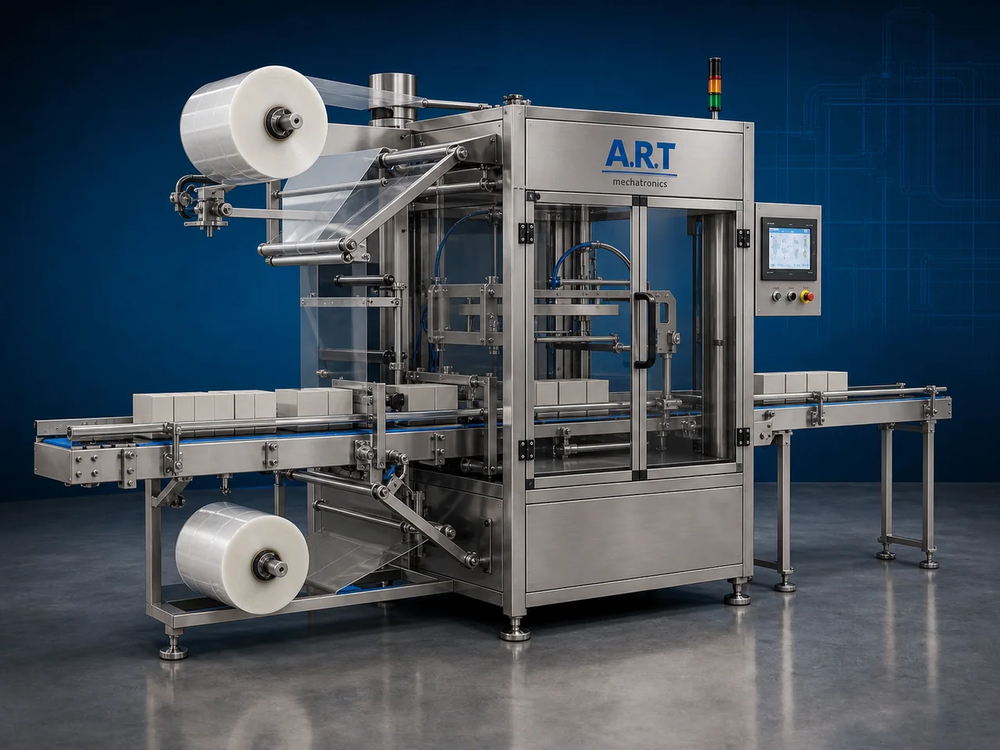

Web Sealer Machine (Automatic Web Sealing & Shrink Packaging System)
A Web Sealer Machine, also known as a Web Sealing Machine, Automatic Web Sealer, L-Sealer Packaging Machine, or Shrink Web Sealing System, is an advanced industrial packaging solution designed for continuous film sealing, shrink wrapping preparation, product bundling, sleeve wrapping, and…

About the Web Sealer
Web sealing systems are widely used for: ✔ Automatic shrink wrapping ✔ Product bundling ✔ Sleeve wrapping ✔ Continuous sealing operations ✔ FMCG packaging lines ✔ Secondary packaging automation
The machine improves: ✔ Packaging appearance ✔ Product protection ✔ Packaging speed ✔ Production efficiency ✔ Retail presentation ✔ Packaging consistency
Industrial web sealer machines use: ✔ Continuous web film systems ✔ Precision sealing mechanisms ✔ Servo or pneumatic synchronization ✔ PLC and HMI automation controls ✔ Shrink wrapping integration systems
to create tightly sealed packaging wraps for retail display, product protection, and industrial transportation packaging.
Web sealer machines are widely used in industries such as:
FMCG industries
Food processing industries
Beverage industries
Pharmaceutical industries
Cosmetic industries
Consumer goods industries
Packaging industries
Industrial product industries
where high-speed wrapping, bundling, and secondary packaging are essential.
The machine is highly suitable for: ✔ Shrink wrapping ✔ Product bundling ✔ Carton overwrapping ✔ Sleeve wrapping ✔ Multipack packaging ✔ Retail display packaging
ART Mechatronics offers high-performance web sealer machines, engineered for continuous industrial operation, accurate sealing quality, synchronized wrapping performance, and reliable long-term automation.
Working Principle of Web Sealer Machine
Products are manually or automatically fed onto conveyor system
Web film wraps around product automatically
Machine synchronizes product movement with sealing system for continuous wrapping operation.
Machine performs: ✔ Side sealing ✔ End sealing ✔ L-sealing ✔ Sleeve sealing for secure and professional packaging quality.
Wrapped products may pass through shrink tunnel for: Tight film shrinkage Attractive retail finish Product protection
System controls: Product synchronization Film movement Sealing timing Conveyor speed Packaging cycle
Wrapped products discharged automatically for: Cartoning Secondary packaging Retail display Dispatch operations
Types of Web Sealer Machines
- 1. Automatic L-Sealer Machine
Designed for: ✔ Standard shrink wrapping applications
- 2. Sleeve Wrapping Web Sealer
Suitable for: ✔ Bottle and multipack bundling systems
- 3. Continuous Web Sealer Machine
Uses: ✔ High-speed continuous wrapping operations
- 4. Food Grade Web Sealer Machine
Designed for: ✔ Hygienic food and pharmaceutical packaging systems
- 5. Servo Driven Web Sealing Machine
Suitable for: ✔ High-speed precision sealing operations
- 6. Fully Automatic Web Sealing System
Designed for: ✔ Complete secondary packaging automation lines
Industries Using Web Sealer Machines
🛒 FMCG Industry Consumer product shrink wrapping and multipack packaging systems 🍃 Food Processing Industry Snack, namkeen, bakery, frozen food, and ready-to-eat packaging systems 🥤 Beverage Industry Bottle bundling and shrink packaging systems 💊 Pharmaceutical Industry Medicine carton overwrapping and secondary packaging systems 🧴 Cosmetic Industry Cosmetic product wrapping and retail display packaging systems 📦 Packaging Industry Industrial wrapping and shrink packaging systems 🏭 Consumer Goods Industry Retail multipack and bundled packaging systems ⚙️ Industrial Product Industry Spare parts and industrial product protective packaging systems
Features & Advantages
✔ High-speed automatic web sealing operation ✔ Attractive shrink wrapping and retail packaging quality ✔ Accurate sealing and synchronized wrapping performance ✔ PLC and automation control systems ✔ Supports multiple product sizes and formats ✔ Improves packaging appearance and protection ✔ Reduces packaging wastage and labor dependency ✔ Hygienic food-grade construction available ✔ Reliable long-term industrial performance
Technical Highlights
Machine Type: L-sealer machine Sleeve wrapping machine Continuous shrink sealer Packaging Material: Shrink films Polyolefin films PVC shrink films LDPE shrink films Features: Servo synchronization PLC control system Touchscreen HMI Automatic film feeding Conveyor synchronization Packaging Style: Shrink wrap Sleeve wrap Multipack bundle Overwrap packaging Automation: Semi-automatic Fully automatic industrial systems
Turnkey Web Sealing Solutions
ART Mechatronics offers: Complete web sealing systems Shrink wrapping and bundling solutions Packaging automation integration systems Conveyor synchronization systems Installation & commissioning After-sales service & AMC
Why Choose Art Mechatronics
Expertise in industrial packaging and automation systems Customized web sealing solutions for multiple industries High-performance and durable sealing technology Advanced PLC and servo automation systems Proven industrial packaging performance across sectors
Applications
FMCG Packaging Facilities Food Processing Industries Beverage Manufacturing Plants Pharmaceutical Industries Cosmetic Manufacturing Units Industrial Packaging Plants
Get pricing & specs for the Web Sealer
Share the product, target capacity, current process and plant location. These details help our engineers discuss the right machine or line configuration.
One partner, from design to start-up
ART Mechatronics designs, manufactures, installs and commissions your Web Sealer solution with regional presence in India, UAE and Thailand.